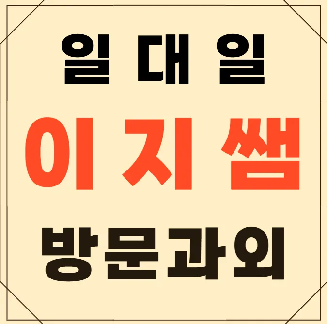
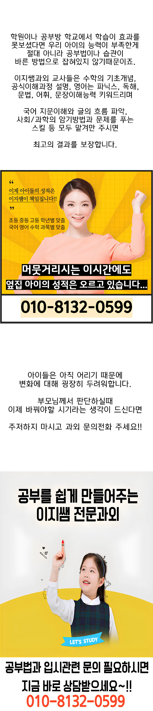

구월동 고등 과외을 고를 때 무조건 많이 가르치는 곳보다는 아이가 스스로 생각하게 유도하는 곳을 찾아야 해요. 부모님 입장에서는 선생님이 다 챙겨주길 바라지만, 결국 시험장은 혼자 가는 거니까요. 특히 학습의 주도권을 학생에게 돌려주겠다는 원칙을 가진 곳이면 아이의 자존감도 높아져요. 고등 논술 첨삭반 공동 운영 경험이 있다는 건 아이의 논리적 사고를 잡아주는 데 탁월하다는 증거이기도 하고요. 단순 암기 위주 수업은 효과가 일시적일 때가 많아요. 아이가 질문하고 토론하는 과정을 통해 개념을 자기 것으로 만드는 구월동 고등 과외인지 꼼꼼히 살펴보세요. 그래야 대입까지 탄탄하게 대비할 수 있는 기반이 마련되니까요.
각 학년마다 학습 동기와 집중 시간이 달라요. 초등 저학년은 놀이와 연계된 학습이 효과적이며, 시각 자료와 손쉬운 실험을 통해 호기심을 자극할 수 있어요. 초등 고학년은 자기주도 학습 능력이 조금씩 성장하니 목표 설정과 자기 점검 방법을 가르치는 것이 중요해요. 중학생은 기본 개념을 튼튼히 다진 뒤 심화 문제 풀이에 집중해야 하고, 교과서 외 자료 활용이 학습 폭을 넓혀 줘요. 고등학생은 시험 전략과 시간 관리가 핵심이며, 실전 모의고사와 피드백을 통해 약점을 보완해 나가야 해요. 전체 학년에서는 부모와 교사의 지속적인 소통이 신뢰를 쌓고 학습 효율을 높이는 데 큰 역할을 한다는 점을 기억하면 좋겠어요. 구월동은 교육 열기가 높은 지역이라 다양한 학습 지원을 쉽게 찾을 수 있어요.
구월동 고등 과외는 개별 학습 흔적을 추적해 맞춤 피드백을 제공하는 것이 큰 강점이에요. 이해도 체크와 오답 분석을 통해 개인별 약점을 정확히 파악하고, 그에 맞는 과제와 보강 수업을 설계해요. 피아노 초급 과정은 140,000원, 중급 과정은 150,000원으로 가격 대비 높은 교육 품질을 유지하고 있어요. 또한, 학습 관련 서적과 팁이 비치된 대기 공간이 학습 분위기를 자연스럽게 조성해요. 구월동 내 접근성이 좋아 이동이 편리하다는 점도 선택 이유 중 하나에요.
| 과외명 | 와와학습코칭과외 |
| 수강료 | 피아노초급 140,000원 | 피아노중급 150,000원 |
CURRICULUM
주차별 단원 구분 수업으로 학습 목표를 단계적으로 달성하도록 설계돼 있어요. 각 주차마다 누적 테스트를 진행해 이해도를 점검하고 부족한 부분을 보완해요. 학습 목표 달성 스토리를 공유하며 학생 스스로 성취감을 느끼게 해요. 수업 시간에는 집중이 잘 되는 시간대를 파악해 맞춤형 활동을 배치해요. 피드백은 즉시 제공되어 다음 주 학습에 바로 적용할 수 있어요. 전체 커리큘럼은 연간 목표와 연계돼 체계적인 성장 로드맵을 제시해요.
구월동 학생들이 자주 겪는 실수는 개념 이해 부족으로 인한 연산 오류와 시험 시간 관리 미숙이에요. 이러한 실수를 줄이기 위해서는 기본 개념을 확실히 잡고, 문제 풀이 시 단계별 체크리스트를 활용하는 것이 효과적이에요. 또한, 꾸준한 복습과 오답 정리를 통해 실수를 체계적으로 교정할 수 있어요. 이런 전략은 점수 상승과 학습 동기 유지에 큰 도움이 돼요.
첫 번째로, 수업 시간대를 학생 개개인의 생활 리듬에 맞춰 유연하게 조정해요. 두 번째로, 과제는 구조화된 포맷으로 제공해 스스로 계획을 세우기 쉽게 해요. 또 다른 측면에서는 교사가 일방적인 통제 대신 참여형 활동을 설계해 학습 몰입을 높여요. 마지막으로, 동일한 포맷의 문장을 병렬로 배열해 학습 내용에 안정감을 주고, 부사를 적절히 연결해 흐름을 자연스럽게 만들어요.
고등학교 1학년으로 학습 태도는 진지하지만 자기 관리가 부족한 학생에게 특히 적합해요. 강의 위주의 수업보다 실전 훈련과 피드백 중심 수업이 필요한 경우 이 구월동 고등 과외이 큰 도움이 돼요. 또한 학습 불안이 있거나 집중력이 흐트러지는 경우, 단계별 목표 설정과 정기 점검을 통해 꾸준히 성장할 수 있어요. 이런 특성을 가진 학생에게 강력히 추천해요.
우리 아이가 매주 목표를 설정하고 달성하면서 집중력이 눈에 띄게 향상됐어요. 구월동 고등 과외에서 제공하는 독서 기록 습관이 자연스럽게 일상에 스며들어 학습 효율이 높아졌어요. 단계별 커리큘럼 덕분에 아이가 스스로 성장 과정을 체감하고 자신감을 얻었어요. 또래와 협력하는 분위기가 아이에게 긍정적인 경쟁심을 불러일으켰어요. 작은 습관 하나하나가 큰 변화를 만든다는 걸 직접 체험했어요.